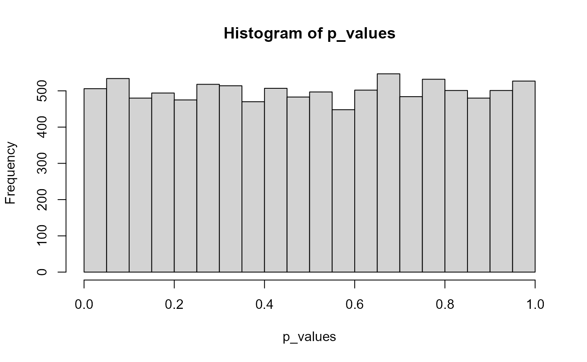
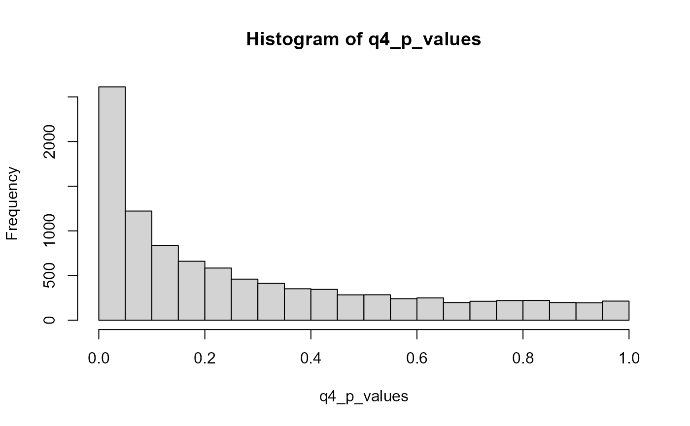

Lab6_OrthNonOrthContrasts.Rmd
library(tidyverse)
#> -- Attaching packages --------------------------------------- tidyverse 1.3.1 --
#> v ggplot2 3.3.6 v purrr 0.3.4
#> v tibble 3.1.7 v dplyr 1.0.9
#> v tidyr 1.2.0 v stringr 1.4.0
#> v readr 2.1.2 v forcats 0.5.1
#> Warning: package 'ggplot2' was built under R version 4.1.3
#> Warning: package 'tibble' was built under R version 4.1.3
#> Warning: package 'dplyr' was built under R version 4.1.3
#> -- Conflicts ------------------------------------------ tidyverse_conflicts() --
#> x dplyr::filter() masks stats::filter()
#> x dplyr::lag() masks stats::lag()
library(tibble)
binom_data <- replicate(10000, sum(rbinom(20, 1, 0.05)))
length(binom_data[binom_data > 0])/10000
#> [1] 0.6334
binom_data2 <- replicate(10000, sum(rbinom(50, 1, 0.05)))
length(binom_data2[binom_data2 > 0])/10000
#> [1] 0.9258
### I understood how to construct the first term, defining the experiments in this case "binom_data," but the actual "check" part using the "length" function was a grammar I was not too familiar with and needed to consult the solutions video for. 70%
dataB <- replicate(10000, sum(rbinom(20, 3, 0.05)))
length(dataB[dataB > 0])/10000
#> [1] 0.9566
### I ended up trying to go waaay too deep here with the aov and tibble functions- when the row/column mismatches seemed to obfuscate any interprable results, I realized I should just check the solutions video, realizing it was way simpler than I thought. 0%
p_values <- c()
for(i in 1:10000){
IV <- rep(1:2, each = 20)
data2 <- c(rnorm(20, 0, 1), rnorm(20, 0, 1))
q2_data <- tibble(IV, data2)
p_values[i] <- t.test(data2 ~ IV, var.equal = TRUE, data = q2_data)$p.value
}
hist(p_values)
### I knew that the rbinom function must've played a role here somewhere (*I also just realized it's supposed to be the rnorm function, not rbinom. So I may have been more clueless than I thought). But I tripped and figuratively faceplanted on the situation when I realized that I'm not making a frequency distribution itself, I'm making a distribution of p-values. So I ultimately needed to watch the solutions video. 50%
### The distribution overall should be relatively flat- similar frequency of occurence of every possible p-value. Makes sense, since this is a randomized/rnorm null situation...
q3_p_values <- c()
for(i in 1:10000){
IV <- rep(1:2, each = 20)
data3 <- c(rnorm(20, 0, 1), rnorm(20, 0.5, 1))
q3_data <- tibble(IV, data3)
q3_p_values[i] <- t.test(data3 ~ IV, var.equal = TRUE, data = q3_data)$p.value
}
hist(q3_p_values)
### This was a fairly natural and quick extension of the previous question. If seeing the solutions video for q2 carries over to q3, I scored maybe 25% on help-requirement. IF this question were to stand on its own terms, I scored a 100% (teeechnically didn't need to check help for this question in particular).
### The distribution is more compressed to the lower end, towards 0; there are still p-values spanning the whole range, but the majority seem to be below 0.2. Approximately 3500 out of 10,000 p-values are below the likely alpha level of 0.05.
q4_p_values <- c()
for(i in 1:10000){
IV <- as.factor(rep(1:4, each = 10))
data4 <- as.numeric(c(rnorm(10, 0.5, 1), rnorm(10, 0, 1), rnorm(10, 0, 1), rnorm(10, 0, 1)))
q4_data <- tibble(IV, data4)
contrast <- c(3, -1, -1, -1)
contrasts(q4_data$IV)<- contrast
aov4 <- aov(data4 ~ IV, data = q4_data)
p_results <- summary.aov(aov4, split = list(IV = list("contrast" = 1)))
q4_p_values[i] <- p_results[[1]]$'Pr(>F)'[2]
}
hist(q4_p_values)
### hist(q4_p_values) It's at this point that I got frustrated and ran to the solutions video. Maybe 65% for effort but I'm probably missing the mark at the last moment. Damn, in hindsight I was closer than I thought...rows 106 and 108 needed your guidance but that was about it.
### The distribution here is similar to that for question 3. Most of the p-values are below 0.2, approx 2700/10,000 are below 0.05.
data1_p_values <- c()
data2_p_values <- c()
for(i in 1:10000){
IV1 <- as.factor(rep(1:4, each = 10))
data1 <- as.numeric(c(rnorm(10, 0, 1), rnorm(10, 0, 1), rnorm(10, 0, 1), rnorm(10, 0, 1)))
q5_data1 <- tibble(IV1, data1)
contrast <- c(3, -1, -1, -1)
contrasts(q5_data1$IV1) <- contrast
aov5a <- aov(data1 ~ IV, data = q5_data1)
p_resultsa <- summary.aov(aov5a, split = list(IV = list("contrast" = 1)))
data1_p_values[i] <- p_resultsa[[1]]$'Pr(>F)'[1]
data2_p_values[i] <- p_resultsa[[1]]$'Pr(>F)'[2]
}
sigPa <- length(which(data1_p_values < 0.05))
sigPb <- length(which(data2_p_values < 0.05))
sigPa == sigPb
#> [1] FALSE
sigPa > sigPb
#> [1] TRUE
sigPa < sigPb
#> [1] FALSE
### I'd initially had the whole thing put there twice. The thing I was missing was that the code in line 138 could be duplicated just so that I extract the omnibus separately from the same analysis. Maybe 70%.
### It appears that more (albeit only slightly more, in the grand scheme of things) type-1 errors are made for the contrast, rather than the omnibus.
library(tibble)
library(tidyr)
library(dplyr)
options(dplyr.summarise.inform = FALSE)
smith_example <- tribble(
~Same, ~Different, ~Imagery, ~Photo, ~Placebo,
#--|--|--|--|----
25,11,14,25,8,
26,21,15,15,20,
17,9,29,23,10,
15,6,10,21,7,
14,7,12,18,15,
17,14,22,24,7,
14,12,14,14,1,
20,4,20,27,17,
11,7,22,12,11,
21,19,12,11,4
) %>%
pivot_longer(cols = everything(),
names_to = "IV",
values_to = "DV") %>%
mutate(IV = factor(IV,levels = c("Same",
"Different",
"Imagery",
"Photo",
"Placebo")))
aov.out <- aov(DV~IV, smith_example)
summary(aov.out)
#> Df Sum Sq Mean Sq F value Pr(>F)
#> IV 4 700 175 5.469 0.00112 **
#> Residuals 45 1440 32
#> ---
#> Signif. codes: 0 '***' 0.001 '**' 0.01 '*' 0.05 '.' 0.1 ' ' 1
contrasts(smith_example$IV)
#> Different Imagery Photo Placebo
#> Same 0 0 0 0
#> Different 1 0 0 0
#> Imagery 0 1 0 0
#> Photo 0 0 1 0
#> Placebo 0 0 0 1
c1 <- c(2,-3,2,2,-3)
c2 <- c(2,0,-1,-1,0)
c3 <- c(0,0,+1,-1,0)
c4 <- c(0,+1,0,0,-1)
my_contrasts <- cbind(c1, c2, c3, c4)
contrasts(smith_example$IV) <- my_contrasts
aov.out <- aov(DV~IV, smith_example)
summary(aov.out)
#> Df Sum Sq Mean Sq F value Pr(>F)
#> IV 4 700 175 5.469 0.00112 **
#> Residuals 45 1440 32
#> ---
#> Signif. codes: 0 '***' 0.001 '**' 0.01 '*' 0.05 '.' 0.1 ' ' 1
(full_summary <- summary.aov(aov.out,
split=list(IV=list("(1+3+4) vs (2+5)"=1,
"(1) vs (3+4)" = 2,
"(3) vs (4)"= 3,
"(2) vs (5)"= 4)
)
)
)
#> Df Sum Sq Mean Sq F value Pr(>F)
#> IV 4 700 175 5.469 0.00112 **
#> IV: (1+3+4) vs (2+5) 1 675 675 21.094 3.52e-05 ***
#> IV: (1) vs (3+4) 1 0 0 0.000 1.00000
#> IV: (3) vs (4) 1 20 20 0.625 0.43334
#> IV: (2) vs (5) 1 5 5 0.156 0.69450
#> Residuals 45 1440 32
#> ---
#> Signif. codes: 0 '***' 0.001 '**' 0.01 '*' 0.05 '.' 0.1 ' ' 1
full_summary[[1]]$`F value`[1]
#>
#> 5.46875
mean(full_summary[[1]]$`F value`[2:5])
#> [1] 5.46875
group_means <- c(4,3,10,11)
(grand_mean <- mean(group_means))
#> [1] 7
(differences <- group_means-grand_mean)
#> [1] -3 -4 3 4
(squared_differences <- differences^2)
#> [1] 9 16 9 16
(sum_squares <- sum(squared_differences))
#> [1] 50
### Unfortunately, papaja still isn't working for me. I should really consult your help on this...
fake_data <- tibble(IV = factor(c("A","B","C","D")),
DV = c(4,3,10,11))
contrasts(fake_data$IV)
#> B C D
#> A 0 0 0
#> B 1 0 0
#> C 0 1 0
#> D 0 0 1
contrasts(fake_data$IV)[,'D']
#> A B C D
#> 0 0 0 1
contrasts(fake_data$IV)[,'D'] * differences
#> A B C D
#> 0 0 0 4
grand_mean + (1 * differences[4])
#> [1] 11
contrasts(fake_data$IV)
#> B C D
#> A 0 0 0
#> B 1 0 0
#> C 0 1 0
#> D 0 0 1
contrasts(fake_data$IV) * differences
#> B C D
#> A 0 0 0
#> B -4 0 0
#> C 0 3 0
#> D 0 0 4
grand_mean*contrasts(fake_data$IV) + contrasts(fake_data$IV) * differences
#> B C D
#> A 0 0 0
#> B 3 0 0
#> C 0 10 0
#> D 0 0 11
c1 <- c(-1,-1,1,1)
c2 <- c(1,-1,0,0)
c3 <- c(0,0,-1,1)
my_contrasts <- cbind(c1,c2,c3)
contrasts(fake_data$IV) <- my_contrasts
contrasts(fake_data$IV)
#> c1 c2 c3
#> A -1 1 0
#> B -1 -1 0
#> C 1 0 -1
#> D 1 0 1
cor(contrasts(fake_data$IV))
#> c1 c2 c3
#> c1 1 0 0
#> c2 0 1 0
#> c3 0 0 1
contrasts(fake_data$IV) * group_means
#> c1 c2 c3
#> A -4 4 0
#> B -3 -3 0
#> C 10 0 -10
#> D 11 0 11
colSums(contrasts(fake_data$IV) * group_means)
#> c1 c2 c3
#> 14 1 1
colSums(contrasts(fake_data$IV) * group_means)^2
#> c1 c2 c3
#> 196 1 1
(colSums(contrasts(fake_data$IV) * group_means)^2)/ colSums(contrasts(fake_data$IV)^2)
#> c1 c2 c3
#> 49.0 0.5 0.5
fake_data$DV
#> [1] 4 3 10 11
grand_means <- c(7, 7, 7, 7)
grand_means
#> [1] 7 7 7 7
grand_means + contrasts(fake_data$IV)[,1]
#> A B C D
#> 6 6 8 8
grand_means + contrasts(fake_data$IV)[,1] * 2
#> A B C D
#> 5 5 9 9
grand_means + contrasts(fake_data$IV)[,1] * 3
#> A B C D
#> 4 4 10 10
grand_means+
(contrasts(fake_data$IV)[,1]*3.5)+
(contrasts(fake_data$IV)[,2]*.5)+
(contrasts(fake_data$IV)[,3]*.5)
#> A B C D
#> 4 3 10 11
fake_data_2 <- fake_data
fake_data_2 <- cbind(fake_data,contrasts(fake_data$IV))
lm(DV ~ c1 + c2 + c3, data = fake_data_2 )
#>
#> Call:
#> lm(formula = DV ~ c1 + c2 + c3, data = fake_data_2)
#>
#> Coefficients:
#> (Intercept) c1 c2 c3
#> 7.0 3.5 0.5 0.5
summary(lm(DV ~ c1 + c2 + c3, data = fake_data_2 ))
#>
#> Call:
#> lm(formula = DV ~ c1 + c2 + c3, data = fake_data_2)
#>
#> Residuals:
#> ALL 4 residuals are 0: no residual degrees of freedom!
#>
#> Coefficients:
#> Estimate Std. Error t value Pr(>|t|)
#> (Intercept) 7.0 NaN NaN NaN
#> c1 3.5 NaN NaN NaN
#> c2 0.5 NaN NaN NaN
#> c3 0.5 NaN NaN NaN
#>
#> Residual standard error: NaN on 0 degrees of freedom
#> Multiple R-squared: 1, Adjusted R-squared: NaN
#> F-statistic: NaN on 3 and 0 DF, p-value: NA
grand_means+
(contrasts(fake_data$IV)[,1]*3.5)+
(contrasts(fake_data$IV)[,2]*.5)+
(contrasts(fake_data$IV)[,3]*.5)
#> A B C D
#> 4 3 10 11
fake_data <- tibble(IV = factor(c("A","B","C","D")),
DV = c(43,22,53,104))
c1 <- c(-1,-1,1,1)
c2 <- c(1,-1,0,0)
c3 <- c(0,0,-1,1)
my_contrasts <- cbind(c1,c2,c3)
contrasts(fake_data$IV) <- my_contrasts
fake_data_2 <- cbind(fake_data,contrasts(fake_data$IV))
lm(DV ~ c1 + c2 + c3, data = fake_data_2 )
#>
#> Call:
#> lm(formula = DV ~ c1 + c2 + c3, data = fake_data_2)
#>
#> Coefficients:
#> (Intercept) c1 c2 c3
#> 55.5 23.0 10.5 25.5
summary(lm(DV ~ c1 + c2 + c3, data = fake_data_2 ))
#>
#> Call:
#> lm(formula = DV ~ c1 + c2 + c3, data = fake_data_2)
#>
#> Residuals:
#> ALL 4 residuals are 0: no residual degrees of freedom!
#>
#> Coefficients:
#> Estimate Std. Error t value Pr(>|t|)
#> (Intercept) 55.5 NaN NaN NaN
#> c1 23.0 NaN NaN NaN
#> c2 10.5 NaN NaN NaN
#> c3 25.5 NaN NaN NaN
#>
#> Residual standard error: NaN on 0 degrees of freedom
#> Multiple R-squared: 1, Adjusted R-squared: NaN
#> F-statistic: NaN on 3 and 0 DF, p-value: NA
sim_data <- tibble(DV = rnorm(6*100,0,1),
IV = factor(rep(1:6, each = 100)))
c1 <- c(1,-1,0,0,0,0)
c2 <- c(0,0,1,-1,0,0)
c3 <- c(0,0,0,0,1,-1)
c4 <- c(-1,-1,2,2,-1,-1)
c5 <- c(1,1,0,0,-1,-1)
orth_contrasts <- cbind(c1,c2,c3,c4,c5)
cor(orth_contrasts)
#> c1 c2 c3 c4 c5
#> c1 1 0 0 0 0
#> c2 0 1 0 0 0
#> c3 0 0 1 0 0
#> c4 0 0 0 1 0
#> c5 0 0 0 0 1
contrasts(sim_data$IV) <- orth_contrasts
summary.aov(aov(DV~IV, sim_data), split=list(IV=list("c1"=1,
"c2" = 2,
"c3"= 3,
"c4"= 4,
"c5" = 5)
))
#> Df Sum Sq Mean Sq F value Pr(>F)
#> IV 5 3.2 0.6413 0.589 0.708
#> IV: c1 1 0.2 0.2499 0.230 0.632
#> IV: c2 1 0.2 0.1639 0.151 0.698
#> IV: c3 1 0.9 0.8585 0.789 0.375
#> IV: c4 1 1.8 1.8167 1.670 0.197
#> IV: c5 1 0.1 0.1174 0.108 0.743
#> Residuals 594 646.3 1.0880
all_sim_data <- tibble()
for(i in 1:10000){
sim_data <- tibble(DV = rnorm(6*100,0,1),
IV = factor(rep(1:6, each = 100)))
contrasts(sim_data$IV) <- orth_contrasts
sim_output <- summary.aov(aov(DV~IV, sim_data), split=list(IV=list("c1"=1,
"c2" = 2,
"c3"= 3,
"c4"= 4,
"c5" = 5)
))
sim_results <- tibble(type = c("omnibus",rep("contrast",5)),
p_values = sim_output[[1]]$`Pr(>F)`[1:6],
sim_num = rep(i,6)
)
all_sim_data <- rbind(all_sim_data,sim_results)
}
type_I_errors <- all_sim_data %>%
mutate(type_I = p_values < .05) %>%
group_by(type, sim_num) %>%
summarize(counts = sum(type_I)) %>%
group_by(type,counts) %>%
summarize(type_I_frequency = sum(counts))
knitr::kable(type_I_errors)| type | counts | type_I_frequency |
|---|---|---|
| contrast | 0 | 0 |
| contrast | 1 | 2057 |
| contrast | 2 | 434 |
| contrast | 3 | 36 |
| omnibus | 0 | 0 |
| omnibus | 1 | 491 |
type_I_errors %>%
filter(type == 'omnibus',
counts == 1) %>%
pull(type_I_frequency)/10000
#> [1] 0.0491
type_I_errors %>%
filter(type == 'contrast',
counts > 0) %>%
pull(type_I_frequency) %>%
sum()/50000
#> [1] 0.05054
type_I_errors %>%
filter(type == 'contrast',
counts > 0) %>%
pull(type_I_frequency) %>%
sum()/10000
#> [1] 0.2527
romeo_juliet <- tibble(subjects = 1:20,
Group = rep(c("Context Before",
"Partial Context",
"Context After",
"Without context"), each = 5),
Comprehension = c(5,9,8,4,9,
5,4,3,5,4,
2,4,5,4,1,
3,3,2,4,3
)
)
romeo_juliet$Group <- factor(romeo_juliet$Group,
levels = c("Context Before",
"Partial Context",
"Context After",
"Without context")
)
c1 <- c(1,1,1,-3)
c2 <- c(0,0,1,-1)
c3 <- c(3,-1,-1,-1)
c4 <- c(1,-1,0,0)
new_contrasts <- cbind(c1,c2,c3,c4)
cor(new_contrasts)
#> c1 c2 c3 c4
#> c1 1.0000000 0.8164966 0.3333333 0.0000000
#> c2 0.8164966 1.0000000 0.0000000 0.0000000
#> c3 0.3333333 0.0000000 1.0000000 0.8164966
#> c4 0.0000000 0.0000000 0.8164966 1.0000000
contrasts(romeo_juliet$Group) <- new_contrasts
summary.aov(aov(Comprehension~Group, romeo_juliet), split=list(Group=list("c1"=1, "c2" = 2, "c3"= 3, "c4" = 4)))
#> Df Sum Sq Mean Sq F value Pr(>F)
#> Group 3 50.95 16.98 7.227 0.00278 **
#> Group: c1 1 12.15 12.15 5.170 0.03710 *
#> Group: c2 1 19.20 19.20 8.170 0.01138 *
#> Group: c3 1 19.60 19.60 8.340 0.01070 *
#> Group: c4 1
#> Residuals 16 37.60 2.35
#> ---
#> Signif. codes: 0 '***' 0.001 '**' 0.01 '*' 0.05 '.' 0.1 ' ' 1
contrasts(romeo_juliet$Group) <- c1
summary.aov(aov(Comprehension~Group, romeo_juliet), split=list(Group=list("c1"=1)))
#> Df Sum Sq Mean Sq F value Pr(>F)
#> Group 3 50.95 16.98 7.227 0.00278 **
#> Group: c1 1 12.15 12.15 5.170 0.03710 *
#> Residuals 16 37.60 2.35
#> ---
#> Signif. codes: 0 '***' 0.001 '**' 0.01 '*' 0.05 '.' 0.1 ' ' 1
contrasts(romeo_juliet$Group) <- c2
summary.aov(aov(Comprehension~Group, romeo_juliet), split=list(Group=list("c2"=1)))
#> Df Sum Sq Mean Sq F value Pr(>F)
#> Group 3 50.95 16.98 7.227 0.00278 **
#> Group: c2 1 0.10 0.10 0.043 0.83917
#> Residuals 16 37.60 2.35
#> ---
#> Signif. codes: 0 '***' 0.001 '**' 0.01 '*' 0.05 '.' 0.1 ' ' 1
contrasts(romeo_juliet$Group) <- c3
summary.aov(aov(Comprehension~Group, romeo_juliet), split=list(Group=list("c3"=1)))
#> Df Sum Sq Mean Sq F value Pr(>F)
#> Group 3 50.95 16.98 7.227 0.002782 **
#> Group: c3 1 46.82 46.82 19.922 0.000392 ***
#> Residuals 16 37.60 2.35
#> ---
#> Signif. codes: 0 '***' 0.001 '**' 0.01 '*' 0.05 '.' 0.1 ' ' 1
contrasts(romeo_juliet$Group) <- c4
summary.aov(aov(Comprehension~Group, romeo_juliet), split=list(Group=list("c4"=1)))
#> Df Sum Sq Mean Sq F value Pr(>F)
#> Group 3 50.95 16.98 7.227 0.00278 **
#> Group: c4 1 19.60 19.60 8.340 0.01070 *
#> Residuals 16 37.60 2.35
#> ---
#> Signif. codes: 0 '***' 0.001 '**' 0.01 '*' 0.05 '.' 0.1 ' ' 1
romeo_juliet <- tibble(subjects = 1:20,
Group = rep(c("Context Before",
"Partial Context",
"Context After",
"Without context"), each = 5),
Comprehension = c(5,9,8,4,9,
5,4,3,5,4,
2,4,5,4,1,
3,3,2,4,3
)
)
romeo_juliet$Group <- factor(romeo_juliet$Group,
levels = c("Context Before",
"Partial Context",
"Context After",
"Without context")
)
c1 <- c(3,-1,-1,-1)
c2 <- c(1,1,-1,-1)
c3 <- c(1,-1,1,-1)
contrasts(romeo_juliet$Group) <- c1
summary.aov(aov(Comprehension~Group, romeo_juliet), split=list(Group=list("contrast"=1)))
#> Df Sum Sq Mean Sq F value Pr(>F)
#> Group 3 50.95 16.98 7.227 0.002782 **
#> Group: contrast 1 46.82 46.82 19.922 0.000392 ***
#> Residuals 16 37.60 2.35
#> ---
#> Signif. codes: 0 '***' 0.001 '**' 0.01 '*' 0.05 '.' 0.1 ' ' 1
contrasts(romeo_juliet$Group) <- c2
summary.aov(aov(Comprehension~Group, romeo_juliet), split=list(Group=list("contrast"=1)))
#> Df Sum Sq Mean Sq F value Pr(>F)
#> Group 3 50.95 16.98 7.227 0.00278 **
#> Group: contrast 1 31.25 31.25 13.298 0.00217 **
#> Residuals 16 37.60 2.35
#> ---
#> Signif. codes: 0 '***' 0.001 '**' 0.01 '*' 0.05 '.' 0.1 ' ' 1
contrasts(romeo_juliet$Group) <- c3
summary.aov(aov(Comprehension~Group, romeo_juliet), split=list(Group=list("contrast"=1)))
#> Df Sum Sq Mean Sq F value Pr(>F)
#> Group 3 50.95 16.98 7.227 0.00278 **
#> Group: contrast 1 11.25 11.25 4.787 0.04386 *
#> Residuals 16 37.60 2.35
#> ---
#> Signif. codes: 0 '***' 0.001 '**' 0.01 '*' 0.05 '.' 0.1 ' ' 1
romeo_juliet <- romeo_juliet %>%
mutate(c1 = rep(c(3,-1,-1,-1),each=5),
c2 = rep(c(1,1,-1,-1),each=5),
c3 = rep(c(1,-1,1,-1),each=5)
)
summary(lm(Comprehension ~ c1 + c2 + c3 , romeo_juliet))
#>
#> Call:
#> lm(formula = Comprehension ~ c1 + c2 + c3, data = romeo_juliet)
#>
#> Residuals:
#> Min 1Q Median 3Q Max
#> -3.00 -1.05 0.00 0.85 2.00
#>
#> Coefficients:
#> Estimate Std. Error t value Pr(>|t|)
#> (Intercept) 4.3500 0.3428 12.690 9.11e-10 ***
#> c1 0.6500 0.3428 1.896 0.0761 .
#> c2 0.6000 0.4848 1.238 0.2337
#> c3 0.1000 0.4848 0.206 0.8392
#> ---
#> Signif. codes: 0 '***' 0.001 '**' 0.01 '*' 0.05 '.' 0.1 ' ' 1
#>
#> Residual standard error: 1.533 on 16 degrees of freedom
#> Multiple R-squared: 0.5754, Adjusted R-squared: 0.4958
#> F-statistic: 7.227 on 3 and 16 DF, p-value: 0.002782
library(ppcor)
#> Loading required package: MASS
#>
#> Attaching package: 'MASS'
#> The following object is masked from 'package:dplyr':
#>
#> select
spcor(romeo_juliet[,3:6])$estimate^2
#> Comprehension c1 c2 c3
#> Comprehension 1.00000000 0.09542631 0.04065500 0.001129305
#> c1 0.06116540 1.00000000 0.08315764 0.166459175
#> c2 0.04368932 0.13942024 1.00000000 0.145925742
#> c3 0.00132626 0.30499118 0.15947322 1.000000000
library(DBSStats2SemesterProject)